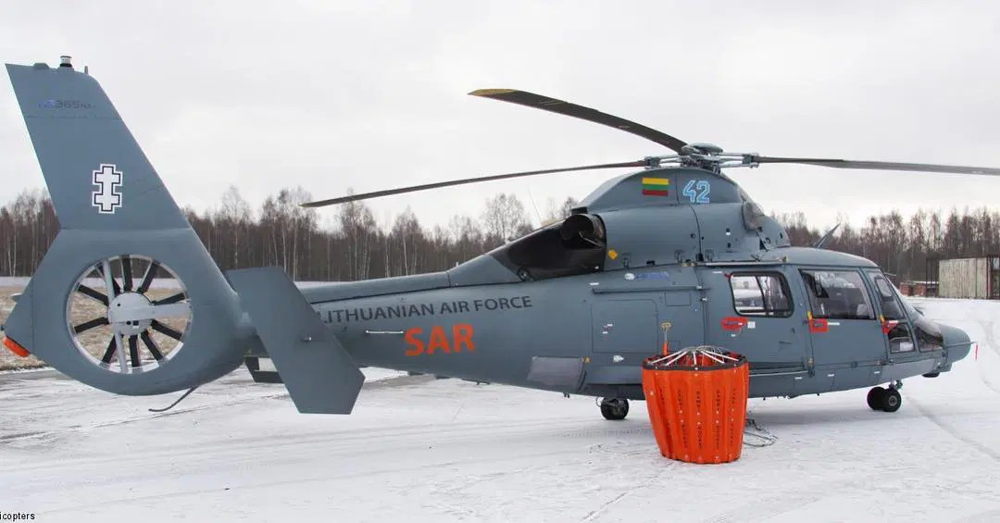
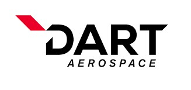
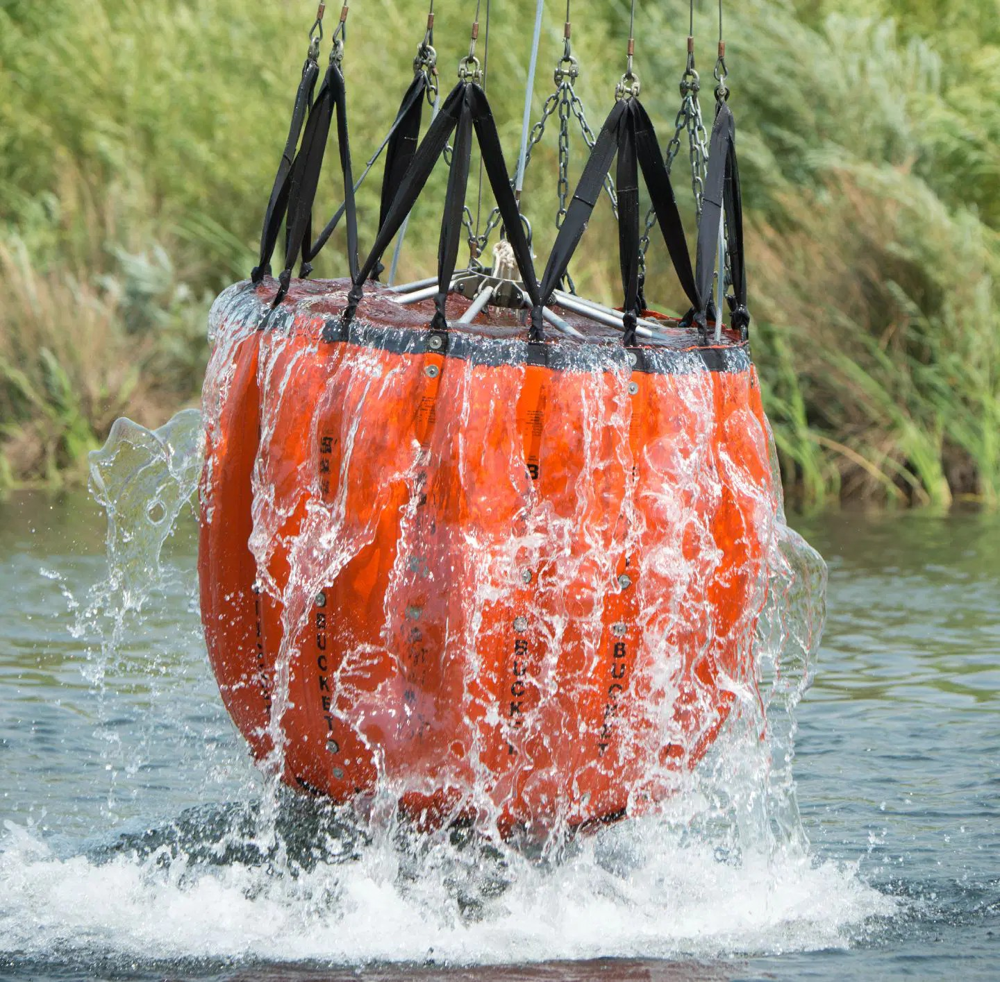

Bambi Buckets are an aerial firefighting system designed to deliver large volumes of water for wildfire suppression. The project focused on supporting the continued development and production of these specialized aerospace products. The work involved engineering documentation and processes associated with maintaining and supporting the product line.
Mechanical Drawings: Amongst a team of talented engineering specialist, our objective is to create assembly procedures and technical documentation for Bambi Buckets to the aerospace engineering standards. Through multi-disciplinary collaboration, our team works with the design, manufacturing and production team to compile detailed and accurate information between for departments.
Key Responsibilities:
